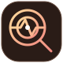

User
Facilities coordinator
Coordinates service requests, technicians and site access across commercial buildings.

SIGNALLENS / LABCustomer intelligence, evidence quality and decision science in one interactive discovery workspace. Explore a demonstration focused on maintenance coordination for commercial facilities.
Explore decision engine →Coordinates service requests, technicians and site access across commercial buildings.
Understand the issue, assign the appropriate resource and communicate progress.
Test whether coordination friction is material before investing in automation.
Demonstration records are synthetic examples, not collected interviews or measured customer outcomes. Public resources below provide methodological context.
| Record | Category | Example observation | Limitation |
|---|
Research context: NIST AI RMF · Usability.gov · DOE operations and maintenance guidance. These resources are not evidence of the example customer pains.
Incomplete service requests and unclear ownership.
Scheduling friction and inconsistent status communication.
Broad industry trends do not establish local demand or willingness to pay.
Adjust weights to compare hypothetical pain points. Scores are demonstration inputs on a 0–100 scale, not research findings.
Recruit across site sizes and roles. Ask for recent concrete incidents, not opinions about AI. Record counterexamples.
Capture missing fields, reassignment frequency and time to resolution. Establish baseline distributions before setting targets.
Minimize personal data, restrict access, require human approval for safety-critical routing and track incorrect suggestions.
Proceed with discovery if multiple independent observations support the same operational friction. Reframe if the dominant cause is staffing or contractual constraints. Stop if the workflow is already adequately served. No investment decision is implied by the demonstration rankings.